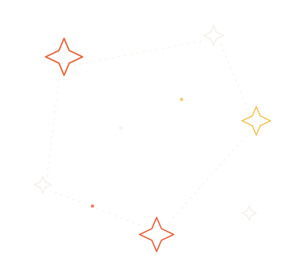
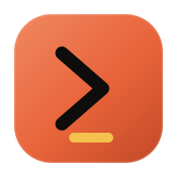
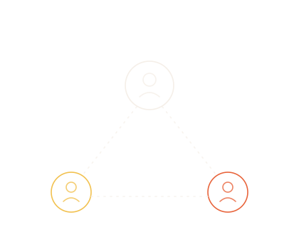

Chat
לשאול, לחשוב, ליצור. עוזר חכם.


סדנה פרונטלית
Claude Desktop — Chat · Co-work · Code
רגע, מה הדבר הזה
המודל המנטלי הכי חשוב בקורס.
זה ההבדל. כל השאר הוא פירוט.
עוצמה ואוטונומיה עולות משלב לשלב.
לשאול, לחשוב, ליצור. עוזר חכם.
עוזר אישי שמבצע משימות על הקבצים שלך.
סוכן אוטונומי מקצה-לקצה. הרמה הגבוהה ביותר.
השאלה שכולם שואלים
| המצב | המשטח |
|---|---|
| שאלה / רעיון / טיוטה מהירה | Chat |
| לעבד קבצים ותיקיות אצלי במחשב, משימה תחומה | Co-work |
| פרויקט מקצה-לקצה, כמה שלבים, אוטומציה | Code |
המשטח הראשון

לנסח הצעת מחיר או מייל ללקוח.
לסכם מסמך או חוזה.
לסיעור רעיונות לפוסט.
להפוך רשימת נקודות לטקסט מסודר.
כולם יחד, על המחשב
פותחים Chat ומבקשים: "נסח לי מייל מקצועי ללקוח על בסיס 3 הנקודות האלה…".
מייל מנוסח — ואז מבקשים Artifact שמסדר את זה יפה בצד.
המשטח השני

לארגן תיקיית מסמכים מבולגנת.
להוציא טבלה מ-PDF-ים.
לעבור על קבצים ולסכם.
להכין חבילת מסמכים ללקוח.
דמו חי
מצביעים Co-work על תיקייה (מסמכים/הורדות): "ארגן לי את התיקייה הזו לתתי-תיקיות לפי נושא, ותכין טבלת תוכן".
רואים את ה-New Task נבנה — והתיקייה מתארגנת לבד.
המשטח השלישי, הליבה

לפני ביצוע — Claude חוקר ומתכנן, כותב תוכנית מדויקת (גם כקובץ MD). אתה מאשר לפני שהוא נוגע במשהו — ורק אחרי אישור הוא בונה.
Connectors מובנים בקליק (Notion, Drive, Calendar…). אין connector? MCP רשמי מותאם, או CLI (למשל GitHub דרך gh). החיבור נשמר — מתחברים פעם אחת.

דמו חי
connector אחד יחד — למשל Google Calendar או Drive.
מ-Claude לעשות איתו משהו פשוט — לקרוא את אירועי היום, או לסכם קובץ.
מתי משימה גדולה מדי לסוכן אחד
משימה אחת גדולה — מתפצלת לצוות סוכנים שעובד עליה במקביל.
משימה גדולה נשברת לכמה סוכנים שעובדים במקביל.
כל סוכן מטפל בחלק משלו — בו-זמנית.
הסוכן הראשי אוסף הכול לתוצאה אחת מסודרת.
ש-Claude יגיב לאירועים לבד
settings.json.ב-Desktop פקודת /hooks לא נפתחת — מגדירים ע"י עריכת settings.json.
קיצורי דרך
//usageלראות כמה שימוש ניצלת.
/compactלכווץ שיחה ארוכה.
/contextמצב ההקשר.
/initלהקים קובץ פרויקט.
⚠️ חלק מהפקודות (/permissions, /config, /agents, /hooks, /doctor) פתוחות רק בטרמינל ולא באפליקציית Desktop. לאמת חי אילו / עובדות ב-Desktop.
לבחור את המוח הנכון.
החזק והחכם ביותר. למשימות מורכבות.
המאוזן ליום-יום. הכי טוב ל-everyday tasks.
הזול והמהיר ביותר. למשימות קלות ומהירות.
מודל frontier מתקדם.
כמה "לחשוב"
/fast) — Opus עם פלט מהיר, לא הורדת מודל.מי מאשר מה
⚠️ /permissions UI = טרמינל בלבד. ב-Desktop ההרשאות דרך בקשות האישור/הגדרות.
לארוז ולשתף
לפני שמשחררים סוכן.
לא להדביק API keys/סיסמאות — env var בלבד.
גיבוי לפני connectors/פעולות גדולות.
מנוי/API נצרכים — לשים לב לעלות.

עכשיו אתם
כל אחד מביא רעיון משלו.
הסוכן חוקר ומתכנן.
אתם מאשרים את התוכנית.
הסוכן בונה בעצמו.
רבע שעה בזמן שהוא עובד.
משימות שרצות לפי לו"ז (cron), בלעדיך — לוקאלי כשהמחשב דולק, או בענן (remote/cloud) גם כשהוא כבוי. מגדירים פעם אחת — רץ לתמיד.
היעד של החלק הזה
הודעה אוטומטית — תזכורת או פולואפ — ישירות לוואטסאפ.
סיכום יומי: יומן + משימות + לידים, מגיע אליך לבד.
סקירה עסקית (WBR) שמופקת ונשלחת פעם בשבוע.
הדגל — Claude עם ידיים בעולם האמיתי
פותחים instance ב-GREEN-API + סורקים QR ממספר ייעודי.
שומרים idInstance + apiTokenInstance כ-env vars — לא בצ'אט.
routine שרץ כל יום ושולח הודעה דרך ה-API.
GREEN-API הוא gateway לא-רשמי
מפר את ה-ToS של WhatsApp, סיכון חסימה. לאוטומציה אישית / דמו בלבד, על מספר ייעודי. ל-production ← המסלול הרשמי (Meta Cloud API).
ויזואל
לוקחים הביתה.
מוכנים להטמעה (15 + 15).
הפונטים של המותג, מוכנים לשימוש.
אוסף פרומפטים מוכנים.
דף קיצורים מהיר.
צעד-אחר-צעד.
מדביקים ויורד הכול.
שולפים את ה-skill מה-repo.
שמים את החבילה בתיקיית ה-skills.
מזהה ומשתמש בה כשרלוונטי.

נתראה בקהילה
טל מובשוביץ ✕ עומרי כתב